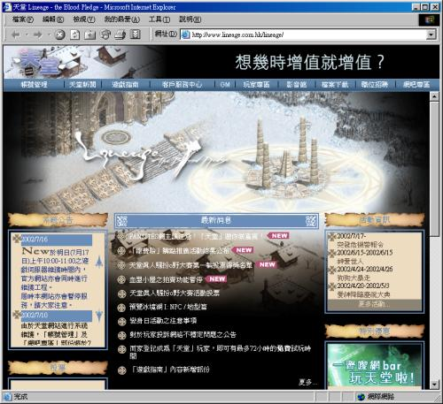
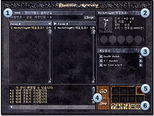
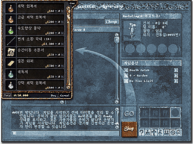
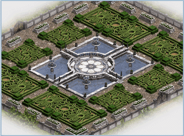
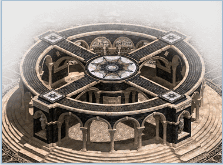
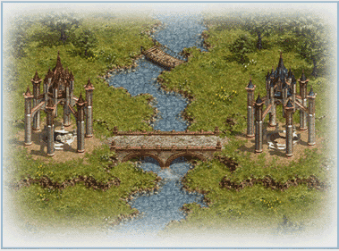
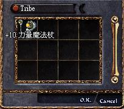
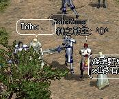

|
2002年7月18日
台灣官方人員證實有玩家透過血盟小屋系統不法取得天幣
以下新聞轉載自ETtoday的報導：
「天堂」發現上億偽幣 遊戲橘子：24日前回復玩家帳號及寶物
記者王以瑾／台北報導之前一直採取迴避媒體態度的遊戲橘子，18日終於由營運長沈秉文出面，證實確有「聰明過頭」的玩家，利用小屋拍賣機制的漏洞，製造偽幣；不過，遊戲橘子強調，天幣與物品都有編號，只要清查伺服器上的紀錄，24日以前就會恢復受害玩家的帳號，並歸回被騙的物品，因此這次的偽幣事件，應該不會造成玩家損失。
依據陳姓受害玩家的說法，偽幣事件發生在14日清晨5時至6時，而中午維修之後，約有140人帳號被鎖，遊戲公司方面則在晚間7時發現異常，旋即將小屋拍賣機制封閉。
發現偽幣之後，天堂相關留言版立即引發熱烈討論，玩家除了與遊戲橘子協調開放被鎖帳號外，同時向本報投訴，不過，記者多次詢問，得到的答案都是「沒有聽說這回事！」直到18日，才統一由營運長沈秉文出面發言。
沈秉文指出，在發現玩家利用血盟小屋程式漏洞複製出天幣之後，遊戲橘子已立即暫停所有小屋拍賣機制，並通知韓國原廠修補，小屋拍賣機制在24日就可開放，而新的資料片冰鏡湖也不會有相關問題。
沈秉文說，目前確定利用這個漏洞製造偽幣的玩家，共有10多名，但因持有偽幣而被鎖帳號的受害玩家到底有多少人，目前遊戲橘子並沒有資料，損失金額多少，也沒有辦法統計；遊戲橘子工程人員正在進行全面清查，只要不是製造偽幣者，24日前就會恢復帳號，被騙走的寶物也會回復，玩家應該不會有損失。
至於以漏洞製造偽幣者，遊戲橘子將保留法律追訴權；沈秉文說，有些玩家可能認為天堂只不過是個遊戲，過份輕忽事情的嚴重性，之前有個判決案例，法官已將線上遊戲的寶物視為動產，若以非告訴乃論的竊盜論罪論處，事情可就麻煩了，沈秉文特別呼籲線上遊戲愛好者，回歸遊戲基本面，不要盡想鑽違反遊戲精神與規定的漏洞，以免惹麻煩上身。
香港天堂官方網站更新了版面
為配合第十一章：冰鏡湖的來臨香港天堂官方網站更新了版面：

Lineage World Championship官方網站
雖然在前一期PC Gamewave 2000刊登了道歉啟事說明香港並無King of Lineage及Lineage World Championship活動，不過韓國方面卻製作了Lineage World Championship官方網站並介紹其玩法：
進入遊戲前畫面：

買道具畫面：

戰鬥場地 - Garden：

戰鬥場地 - Crossroads：

戰鬥場地 - The Glory：

香港愛神伺服器出了+10力杖！

早前有傳聞香港愛神伺服器出現了+10力量魔法杖，經本網人員在交易視窗上親看所見證實後，已經確認這個消息是真實的！Tribe便是該神器的擁有者。大家當然非常好奇怎樣衝吧？只要你有勇氣在+9力杖上用白武，便有機會得到+10力杖了！在此恭喜Tribe！
 |